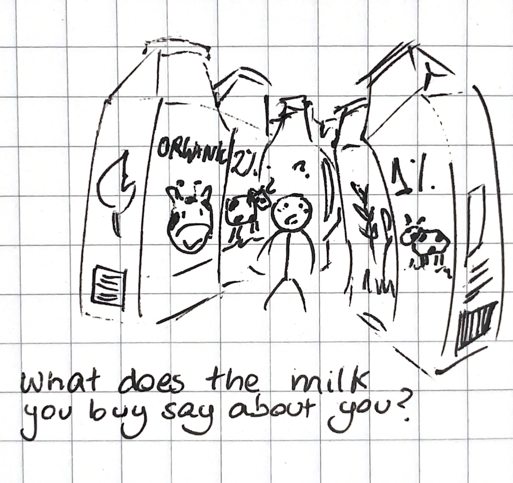
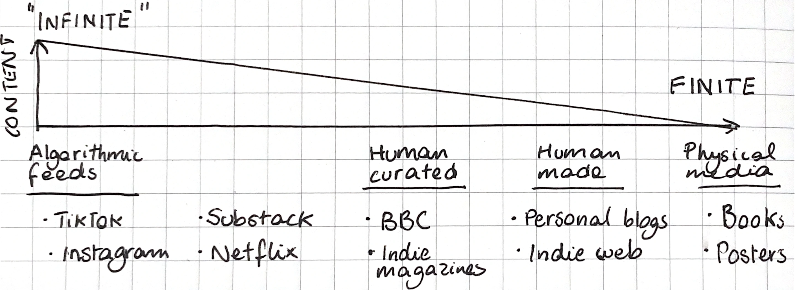

Since getting a MP3 player last year, I have noticed how low my satisfaction is when streaming music on Spotify. The same album seems to demand my attention in different ways. And I’m not the only one to have noticed this, my friends have pointed it out after we listen to music together; when they get home and stream the same album, it just doesn’t sound as good.
I was curious about why this may be. Was it the interface, increased friction, sense of ownership, or divided attention? It may be a combination of all of it, but I recently came across the phenomenon of choice overload, which suggests that although more choice may initially lead to higher satisfaction (thinking we made the best decision), as the number of items within a set increases, studies show that it may lead to lower satisfaction and motivation, and an increase in negative emotions such as regret.

Grocery store aisles are a good example of increased consumer choice in day-to-day life.
I noticed it everywhere. The platforms we consume music through might be cognitively affecting the perceived quality of songs. This phenomenon applies to other media too. I had subconsciously been subject to choice overload for months; when reading essays in media-aggregating platforms such as Substack or Medium, I had tried to go to that person’s independent blog despite inconveniences. This is what motivated me to make my own website to cross-post from Substack. Although the content remains the same, I was uncomfortable with how easy it is to navigate away and into an ocean of content, so it encourages readers to read it more lightly. In these platforms, we can’t control the context in which our work is shown, or which profiles the algorithm choses to put it next to. Independent websites contain a ‘finite’ source of essays; you can technically read someone’s entire website, but you could never read the endless inflow of Substack posts. Social media, streaming platforms and online libraries suffer from this phenomenon. Although endless choice and possibility can initially seem like a good thing, this is hardly the case when the quality of each item is blurred by sheer amount of it. We are simply not equipped with the capacity to weigh out that many pros-and-cons.

Rough assignments of popular platforms on a media finitude scale, from short-form video content to print media
After this realisation, I have come to see platforms in terms of how finite they are. A scale which goes from infinite (social media) to medium (online newspapers) to highly finite (a personal website). At the very highest are books, magazines, and posters, which are entirely self-contained. This may be the crux of why people are turning to physical media, which they describe as being more satisfying. Highly finite media removes distractions and makes it easier to focus on the information presented. Although I may flip through a magazine before deciding what to read, no amount of content blockers and screen-time limits will change the fact that many of the platforms we access the internet from are inherently and purposefully infinite.
Over the next few months I will be experimenting with choice in my day-to-day life, swinging in the opposite direction and seeing where that takes me. Last night, I went to my friend's favourite restaurant and I didn't even open the menu, I just trusted his recommendation. Something as simple as deciding which kind of coffee we want before we walk into a cafe can force us to slow down and check-in with our bodies, something which is a rare privilege in today's rush. Alternatively, given that I recently moved to Beijing and my Chinese isn't very good, my food options have been reduced to what is easiest to point at in the menu, and a good dish feels like finding an amazing CD in a charity shop. What delight there is to be found in the unexpected!